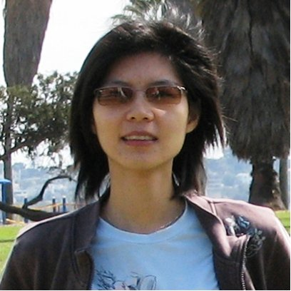

EASM 2018
3rd International Workshop on Event Analytics using Social Media Data, June 25 2018, Stanford, California
In conjunction with The 12th International AAAI Conference on Web and Social Media (ICWSM-18)
Social media channels enjoy many advantages over traditional media channels, such as ubiquity, mobility, immediacy, and seamless communication in reporting, covering and sharing real-world events, e.g., the Boston bombings, the NBA finals, and the U.S Presidential elections. Given these advantages, social media posts such as tweets can typically reflect events as they happen, in real-time. Despite these benefits, social media channels also tend to be noisy, chaotic, and overwhelming. As a result, the vast amount of noisy social media data poses tremendous challenges for conducting in-depth analysis, which is critical to applications for event playback, journalistic investigation, storytelling, etc. The purpose of this half-day workshop is to bring together researchers that are working in a variety of areas that are all related to the larger problem of analyzing and understanding events using social media responses, to discuss: 1) what are the recently developed machine learning and data mining techniques that can be leveraged to address challenges in analyzing events using social media data, and 2) from challenges in analyzing events, what are the practical research directions in the machine learning and data mining community.
Topics of Interest
We encourage submissions on a variety of topics, including but not limited to:Submission
Instructions
EASM 2018 invites contributions focused on all aspects of event analytics using social media data. We welcome papers that discuss new challenges and potential solutions and encourage submissions which present early stages of cutting-edge research and development. We accept regular technical papers (6 pages), extended abstracts (2 pages), and position papers (1 page). The paper should be using the AAAI format. The presentation format will be determined by the paper quality, innovation, etc. Accepted works will be posted online in May/June 2018. All submissions are single-blind. Each submitted paper will be evaluated by three reviewers from the aspects of novelty, significance, technique sound, experiments, and presentation quality. The reviewers will be program committee members or researchers recommended by the members. To submit the paper, please send it to easmworkshop@gmail.com, with subject "EASM 2018 submission"
Important Dates
Organizers
Yuheng Hu Email is an assistant professor at University of Illinois at Chicago. Yuheng works at the interface of Social Computing, HCI and Machine Learning. His research focuses on developing algorithms, tools and systems to characterize, make sense of, and predict people's reactions on social media in response to different real world events. His work has been published at various highly reputed conferences including AAAI, IJCAI, ICWSM and CHI, where he won a best paper nomination in 2013. His work has also been featured in press outlets such as ABC, PBS, The Seattle Times, and FastCompany.
 Yu-Ru Lin Email is an assistant professor at the School of Information Sciences, University of Pittsburgh. Her research interests include human mobility, social and political network dynamics, and computational social science. She has developed computational approaches for mining and visualizing large-scale, time-varying, heterogeneous, multi-relational, and semi-structured data. Her current research focuses on extracting system-level features from big data sets, including social media data and anonymized cellphone records, for studying human and social dynamics, particularly under exogenous events such as emergencies and media events. Her work has appeared in prestigious scientific venues including WWW, SIGKDD, InfoVis, ACM TKDD, ACM TOMCCAP, IEEEP and PLoS ONE.
Program
To be annouced